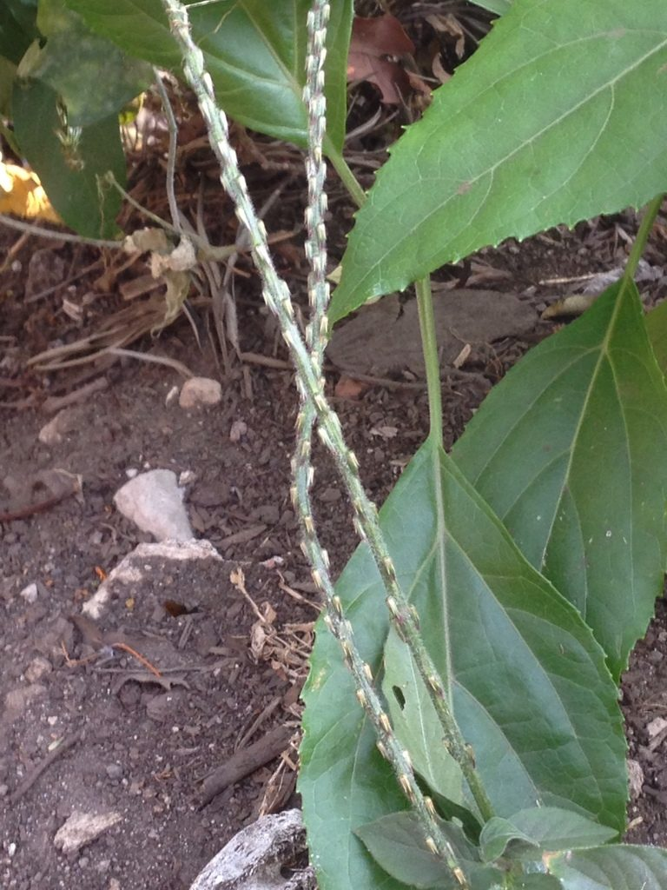

Plant Library › Apamarga
Apamarga
Achyranthes aspera L.
NCISM 97 · No. 43
An erect, stiff herb with opposite leaves and characteristic slender terminal spikes bearing small green flowers; mature inflorescences produce rough, persistent bracts that readily cling to passing material.

Verified study data
- Sanskrit name
- अपामार्ग
- Botanical name
- Achyranthes aspera L.
- Family
- Amaranthaceae
- English name
- Prickly Chaff Flower
- Habit
- Erect herb; commonly a weed
- Description
- An erect, stiff herb with opposite leaves and characteristic slender terminal spikes bearing small green flowers; mature inflorescences produce rough, persistent bracts that readily cling to passing material.
- Rasa
- Katu, Tikta
- Guna
- Laghu, Tikshna
- Virya
- Ushna
- Vipaka
- Katu
- Useful part
- whole plant / pañcāṅga
- Indications
- Krimi, Apachi, Medoroga, Kasa, Mutrakrichha
- Dose
- Whole plant 20–50 g for decoction; root 5–10 g (API); Apamarga Kshara 0.5–2 g
- Anupana
- Not populated
- Precautions
- Clinical use and dose should be formulation-specific and supervised; do not infer a dose without a qualified physician.
- Contraindications
- No universal contraindication statement added without source-level verification.
- Therapeutic actions
- Traditional lekhana and deepana actions, Traditional use in selected urinary and digestive indications
- Quick revision
- Apāmārga is Achyranthes aspera L. of Amaranthaceae; the official pharmacopoeial drug is the dried whole plant (Pañcāṅga), recognized by its erect habit, opposite leaves and characteristic terminal spikes.
- Shloka / classical text
- Not available in verified record
- Nighantu references
- Not available in verified record
- Samhita references
- Not available in verified record
Important formulations
- Apamarga Kshara
- Apamarga Kshara Taila
- Agastya Haritaki Rasayana
Academic trust & review
This page is a static, crawlable rendering of the DravyaGuna 97 database record. It does not invent missing fields.
Reviewer attribution is shown only when a named reviewer is actually recorded in the project data. See the Sources & Review page for the verification framework and source policy.
Continue to full dossier
The interactive dossier contains the full image gallery, detailed textbook notes, MCQs and revision tools.
Sources recorded for this entry
- Ayurvedic Pharmacopoeia of India / PCIM&H draft monograph — Apāmārga Pañcāṅga — source
- ESIC Ayush Division — Ayurveda offering Herbal Healing: Apamarga — source
- NCISM II BAMS Dravyaguna Vigyan curriculum — source
- TDU Indian Medicinal Plants Database — source
- Wikimedia Commons — source
- Amidha Ayurveda Herb Database v2.0 — source